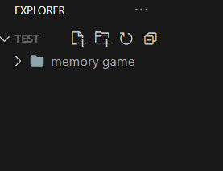

Wij hebben een memo game gecreërd om jullie geheugen te testen!
Hiervoor heb je volgende talen nodig:
- HTML
- CSS
- JavaScript
Om te beginnen gaan we eerst de HTML code schrijven.
Stap 1 - Mappenstructuur
Eerst open je uw code-editor Visual Studio Code
Om te beginnen gaan we eerst een map aanmaken voor de website. Deze map noemen we "memory game".
Daarna gaan we de volgende folders aanmaken:
- CSS
- JS
Stap 2 - Creëer de index.html
De HTML code is de basis van de website. Hierin zetten we de structuur van de website.
-
Eerst gaan we de doctype schrijven
<!DOCTYPE html>. - Druk nu op ! op je toetsen bord en daarna ENTER.
- Verander nu de titel in de title tag naar `🧠 Memory Game met html, css en JavaScript`.
- Kopieër deze code en plaats het in de body tag, in deze code voegen we divs en een button toe om straks onze CSS en JavaScript op te baseren.
Stap 3 - CSS toevoegen
De CSS code is de styling van de website. Hierin zetten we de kleuren, afmetingen en andere styling van de website.
- Nu gaan we de CSS toevoegen. Dit doen we door de volgende code te kopieëren en te plakken in de style.css file.
- Hier veranderen we de achtergrondkleur naar een gradient en laten we het heen en weer keren. Daarna zetten we de titel in het midden. We zetten de body op een flexbox en zetten de content in het midden.
Stap 4 - JavaScript toevoegen
De JavaScript code is de logica van de website. Hierin zetten we de functionaliteit van de website.
- Maak 2 js bestanden genaamd main.js & library.js in de map js. In de library file zet je de volgende code:
- Nu gaan we de JavaScript linken. Dit doen we door de volgende code te kopieëren en te plakken in index.html, in de body tag onderaan.
1. Nu definiëren we 3 objecten in main.js.
- `Selectors`: een object dat verwijst naar de verschillende HTML-elementen die we nodig hebben voor de functionaliteit van het spel, zoals het bord, de timer en de knop om het spel te starten.
- `State`: een object dat de huidige status van het spel bijhoudt, zoals het aantal kaarten dat is omgedraaid, het totale aantal omdraaiingen en de totale tijd dat het spel heeft geduurd.
- `Dimensions`: een constante die de dimensie van het bord aangeeft en deze waarde wordt uit de HTML gehaald.
2. Vervolgens wordt de functie `generateGame` gedefinieerd. Deze functie wordt gebruikt om het bord te genereren en de kaarten op het bord te plaatsen.
- Er wordt gecontroleerd of de dimensie van het bord even is. Als dat niet het geval is, wordt er een foutmelding gegenereerd en wordt het spel niet gestart.
- Er wordt een array van emojis gedefinieerd die op de kaarten worden geplaatst.
- Er wordt een ander array gegenereerd door de emoji array te mengen en elke emoji twee keer toe te voegen aan het array. Dit nieuwe array bevat dus twee keer zoveel items als de dimensie van het bord.
- Er wordt HTML gegenereerd met de items in het nieuwe array en er wordt een nieuw bord gemaakt met deze HTML.
- Het nieuwe bord vervangt het oude bord.
3. CSS toevoegen aan de kaarten.
- Hiermee worden stijlen toegepast op het spelbord. Het display: grid maakt gebruik van de CSS-grid layout om een 4x4 raster van kaarten te maken. De grid-template-columns en grid-template-rows definiëren de grootte van de cellen in het raster. De gap voegt een tussenruimte van 1 rem toe tussen elke kaart. De padding voegt 2 rem witruimte toe rondom het bord. De border stijl voegt een 2px zwarte rand toe. De achtergrondkleur is een lineaire gradiënt van rgb(0, 158, 223) naar rgb(255, 210, 0) van links naar rechts.
- Deze CSS-code definieert de stijl voor een kaartspel in HTML. De klasse .card wordt gebruikt om de stijl te definiëren voor de kaarten. De position-eigenschap wordt gebruikt om de positie van de kaart te bepalen. De width en height eigenschappen geven de breedte en hoogte van de kaart aan. De cursor eigenschap definieert de muiscursorstijl bij het aanwijzen van de kaart.
- De twee pseudo-elementen .card-back en .card-front worden gebruikt om de stijl van de achterkant en voorkant van de kaart te definiëren. Deze worden gepositioneerd op een absolute manier en krijgen elk een border-radius eigenschap, die de randen afrondt. De background eigenschap geeft de achtergrondkleur van de kaart aan. De transition eigenschap definieert hoe de kaart van de ene naar de andere toestand moet overgaan met een bepaalde overgangscurve. De backface-visibility eigenschap voorkomt het tonen van de achterkant van de kaart tijdens de rotatie. De user-select eigenschap voorkomt dat de gebruiker de kaart kan selecteren.
- Dit definieert de stijl van de achterkant van elke kaart. De font-size bepaalt de grootte van de tekst die op de achterkant van de kaart wordt weergegeven. display: flex zorgt ervoor dat de elementen binnen de achterkant van de kaart als flexibele items worden weergegeven, wat het centreren van inhoud gemakkelijker maakt. align-items: center en justify-content: center centreren de inhoud van de achterkant van de kaart. De background kleur is #fdf8e6, wat een lichte gele kleur is. De transform eigenschap bepaalt de rotatie van de kaart om de Y-as en Z-as.
- Deze CSS-regels definiëren de stijl van een omgedraaide kaart. .card.flipped wordt toegevoegd aan de kaart wanneer deze wordt omgedraaid. rotateY en rotateZ veranderen de rotatie van de kaart wanneer deze wordt omgedraaid. De voorkant van de kaart draait 180 graden om de Y-as en 50 graden om de Z-as. De achterkant van de kaart draait terug naar de oorspronkelijke rotatie (0 graden) op beide assen.
4. De functie `startGame()` start het spel. De startknop wordt uitgeschakeld en de timer begint te lopen.
5. De `flipCard` functie handelt het omdraaien van de kaarten af. Het neemt een `card` parameter, die de kaart is die is aangeklikt. De functie controleert of het spel al is gestart en begint zo nodig een nieuwe timer. Het voegt de `flipped` class toe aan de kaart die is aangeklikt en houdt bij hoeveel kaarten er zijn omgedraaid. Als er twee kaarten zijn omgedraaid, controleert de functie of ze overeenkomen. Als dit het geval is, voegt de functie de `matched` class toe aan de kaarten en controleert of de speler het spel heeft gewonnen. Als er geen match is, draait de functie de kaarten na 1 seconde weer terug.
6. De `flipBackCards` functie draait alle kaarten terug die nog niet gematched zijn. Het reset ook het aantal omgedraaide kaarten naar 0.
7. De `checkWinGames` functie controleert of alle kaarten zijn gematched en of de speler het spel heeft gewonnen. Als dit het geval is, roept de functie de `winGame` functie aan die de speler feliciteert.
8. De `winGame` functie laat een alert zien om de speler te feliciteren met het winnen van het spel.
9. Ten slotte roepen we de `generateGame` en `attachEventListeners` functies aan om het spel te genereren en de event listeners aan de document toe te voegen.
Als je alles bij elkaar voegt, heb je een werkend memory spel dat gebruik maakt van HTML, CSS en JavaScript!
Zo zal je code eruit zien op het einde!!!